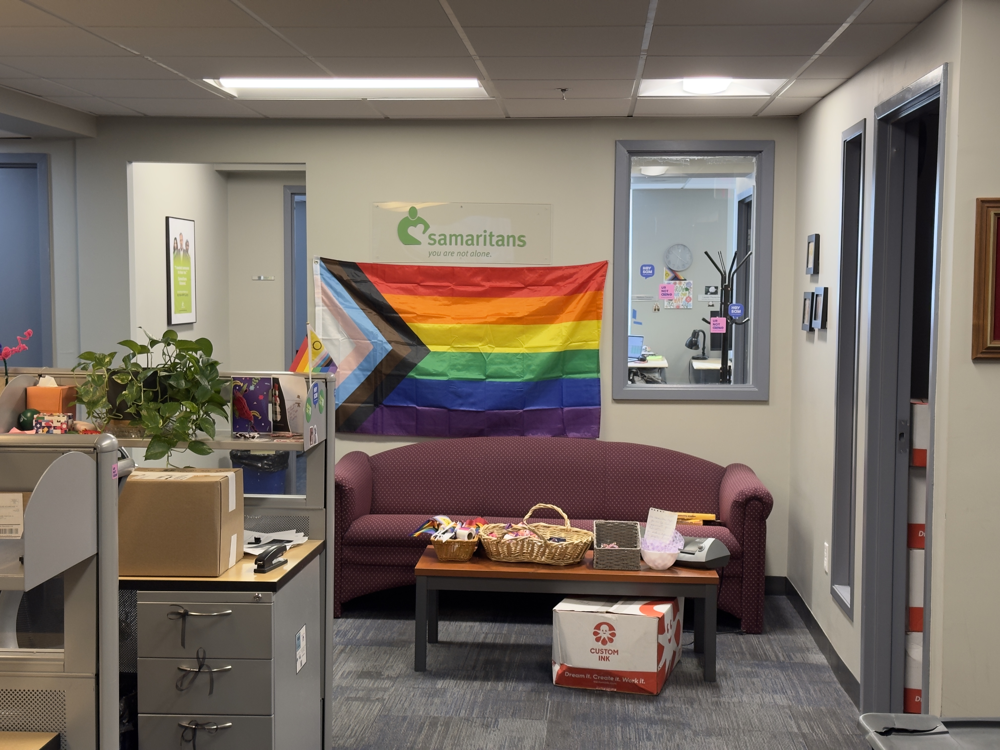
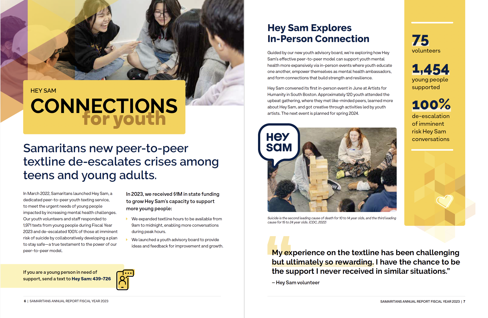
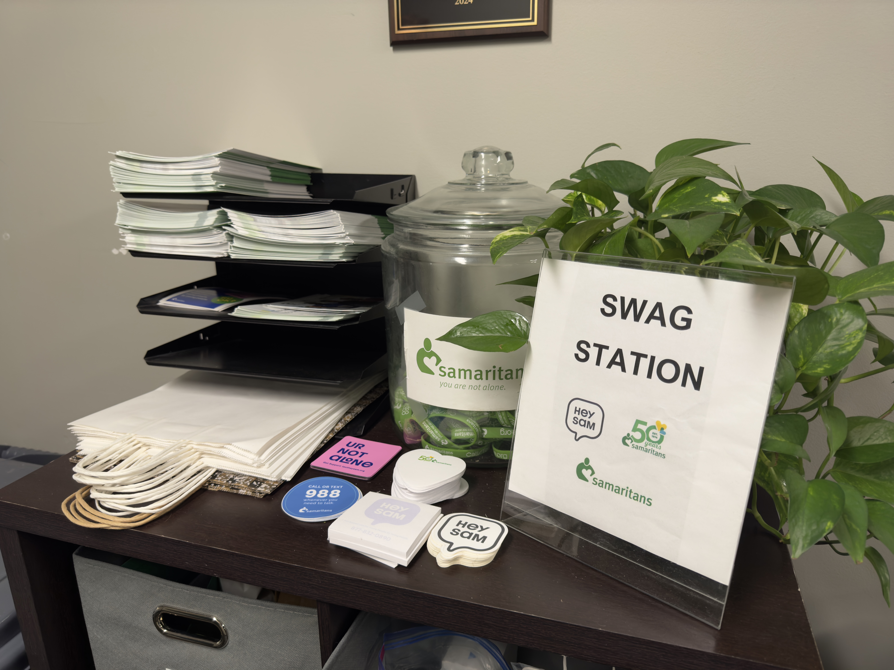

Access to mental health care, along with associated outcomes, is deeply disparate in Boston's low-income and underserved neighborhoods. In fact, strikingly high rates of emergencies for mental health have been reported within communities such as Roxbury, Dorchester, Mattapan, and the South End, according to a 2024 report by the Boston Public Health Commission. In 2021, the South End (zip codes 02111 and 02118) had the highest rate in the city: 1,143 emergency department visits per 10,000 residents for mental health. The rates in Dorchester, Roxbury, and Mattapan were the next highest, 1,119.2, 622.8, and 622.7 visits per 10,000 residents, significantly above the city average of 470.1 visits per 10,000.
These communities, representative of significant Black and Latinx populations, witness higher rates of chronic sorrow, anxiety, and suicidal ideation compared to areas with greater affluence. Between 2017 and 2021, mental health related Emergency Department visits increased 54% among Black youth ages 10-19 years compared to White youth of the same age. Additionally, 41% of Latinx youth reported feeling frequently sad, as compared with 33% of White youth and were twice as likely to attempt suicide.
It is clear that the barriers to mental health care within these communities go beyond issues of availability. This report deepens the understanding that 28% of adults in Boston and 34% of Black and Latinx adults do not get mental health care because of cost. Stigmatization within the communities and a shortage of culturally competent providers further worsen these challenges and make it hard for people to get care when they most need it.
Organizations like Samaritans Boston try to bridge such gaps with targeted support and innovative programs. Data on this commitment shows the following in the organization's Annual Report for FY23: Samaritans have made 114,463 contacts through their 24/7 helpline, peer-to-peer texting service, grief support groups, and educational workshops.
Samaritans' headquarter in Boston, Mass. Photo by Feixu Chen
“This is not a numbers game for us," said Kacy Maitland, the chief clinical officer at Samaritans. "Our impact isn't measured in metrics alone. Instead, it is about being present, earning trust, and forging true partnerships within the community," Maitland said.
At the heart of the Samaritans mission is its 24/7 helpline, which fielded 96,620 calls last fiscal year. That free, confidential service is a lifeline to the community, particularly in Roxbury and Dorchester, which have fewer mental health resources. "Our goal is to ensure that help is accessible to everyone, regardless of language or background," said Maitland. This helpline is available in 240 languages, which speaks volumes about the organization's commitment to cultural competencies and inclusivity.
One of the most innovative additions to the services of Samaritans is a peer-to-peer text line called Hey Sam, launched in March 2022, designated for those under the age of 24. "Hey Sam was created because we knew young people wanted to reach out to someone like them, who understands their experience first-hand," said Jeremiah Mankin, the Director of Hey Sam. This idea was inspired by discussions between Senator Becca Rausch and a number of young constituents, who harped on the need to make support available from peers and not led by adults. In its first year, Hey Sam facilitated 1,971 conversations with a total success rate of 100% in de-escalating imminent suicide risk situations. This figure represents Samaritans' crisis management approach.

Hey Sam stickers and promotional cards with QR code. Photo by Feixu Chen
Mankin described the extensive training volunteers undergo. "The volunteers all go through a 40-hour training course with self-directed learning, live sessions, and practice shifts with experienced volunteers," he said. In that training, volunteers are taught to listen compassionately and nonjudgmentally and encourage users to explore their own feelings and experiences. "Trust by our users is established by continuous, compassionate contact," he went on to say.
Data from Hey Sam, a text line linking young people to emotional support and mental health resources through the City of Boston, illustrates how vital it is. The text line manages upwards of 400 to 500 conversations each month, with an average interaction time of 41 or 42 minutes. "These are not just quick check-ins," said Mankin. "The depth and length of the conversations show that young people are willing to engage and find value in this support.”
Screenshot of the Samaritans' FY2023 report.
This strategy has been key in Hey Sam's effort to prevent unnecessary emergency interventions. "A lot of what we do is developing safety plans, so we do not have to escalate to emergency services unless necessary," said Mankin. This approach is critical in gaining confidence in some marginalized communities, where such interventions can sometimes result in negative outcomes.
Collaborative outreach has continued to expand the work of Samaritans. Their partnership with DeeDee's Cry, which works for mental health in Boston's BIPOC communities, is working toward creating a Local Outreach to Suicide Survivors (LOSS) Team that would reach out to and support families in areas such as Mattapan and Dorchester. "This type of collaboration is what will help us grow our reach and ensure the services we provide are culturally competent and based within the community," said Mankin. These partnerships enable Samaritans to work closely with local leaders and tailor programs according to the particular needs of the communities they serve.
Maitland made a point of emphasizing that community partnerships themselves are based on a bedrock of shared interests and mutual belief. "It's meeting people where they are," she said, "and recognizing unique challenges in each setting." This philosophy extends to Samaritans' educational outreach, including workshops held in schools, community centers, and local organizations. Last year, in FY23, Samaritans held 331 educational programs, reaching over 14,305 people, from students and educators to community leaders. Education is the key to empowering people to spot warning signs and create a shared culture of care.
Numbers from the Boston Public Health Commission show that there is still reason for concern. In a research that combined data from 2017, 2019, and 2021, 24.5% of adults in Boston reported having feelings of persistent sadness, which increased to 41.8% and 47.1% among Black and Latinx residents. The numbers were even direr for those who are homeless-populations more than two times more likely to experience persistent sadness and twice as likely to face anxiety compared to those who are housed. These figures put into view the multi-faceted nature of Boston's mental health crisis.
Maitland weighed in on the work involved in meeting such challenges: "It's not enough to provide services. They have to be services that resonate with the community and reflect their lived experiences," she said. The organization reflects that thinking by expanding Hey Sam's hours through the aid of a $1 million state grant to cover the crucial time period of 9 a.m. to midnight, when youth mental health issues often heighten.
Despite these, much stigmatization of mental health still exists in many underserved communities. "Stigma can prevent people from reaching out until they're in crisis, and that's why the trust we build through consistent, culturally sensitive interactions is so important," Mankin said. Samaritans is focused on proactive and preventive measures to combat this stigma head-on, promoting earlier engagement and fostering an environment where fewer people come to the point of crisis.
Going forward, Samaritans are dedicated to continued data collection as a strategy toward the enhancement and growth of their programs. In fact, they strive to leverage the data for ongoing adaptation of their methods in coordination with what the data indicates about service utilization, outcomes, and community feedback. "The numbers guide us, but they're just part of the story. The real impact is seen in the individuals who come back to say, 'Thank you,' or who find hope when they didn't think it was possible," Maitland reflected.
The swag staion at Samaritans' headquarter in Boston. Photo by Feixu Chen
From this vantage point, as this city grapples with the bequeathed mental health consequences of systemic inequity and unfinished business from the COVID-19 pandemic, Samaritans' work is instructive in its model of community-based supportive care. It provides a blueprint focusing on reach, cultural competence, and local partnerships for addressing disparities and engendering resilience.
"Providing hope isn't about giving it—it's guiding people to find it within themselves," Mankin said. Through their helpline, youth text line, and community education, Samaritans ensure mental health care reaches the farthest corners to help build a future where support is not a privilege but a guarantee to all of Boston's residents.